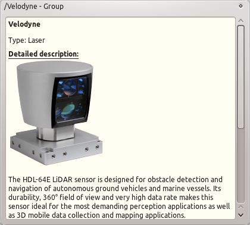

Node Manager
Usage: Description Dock
The
Description Dock
shows additional informations about selected nodes, topics or services. It can also contain more control options. Some examples:

back to node manager